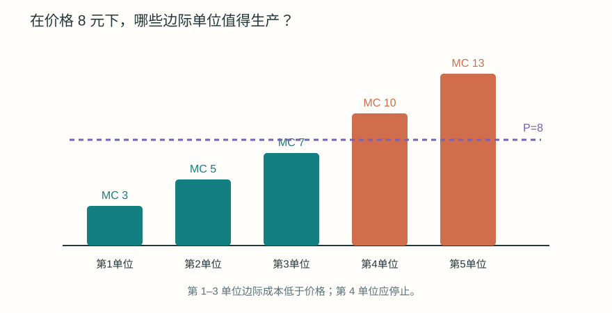
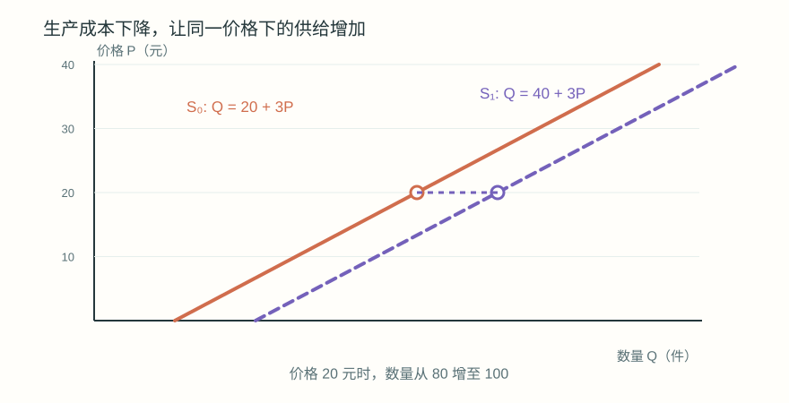

CHAPTER 04 · MICROECONOMICS
供给曲线：成本与供给定律
生产多少件不是凭感觉：比较每增加一件的收入与成本。
多生产一件，卖家愿不愿意？
面包店在某个售价下是否愿意多烤一个面包，首先取决于多烤这一件所增加的材料、能源和劳动成本。供给量指某一价格下卖家愿意且有能力供应的数量；供给曲线则给出不同价格下的供给量组合。
在最简单的模型里，企业接受市场价格，所产商品可全部售出。若企业能够影响价格、产能被配额严格限制或生产具有不可分的批量成本，简单供给曲线就需要修正。
边际成本和价格的逐件比较
设生产第1到第5个面包的额外可变成本分别是3、5、7、10、13元，市场售价每件8元。前三件带来正的额外利润贡献；第4和第5件边际成本已经超过价格，因此这个离散教学例子选择生产3件。

| 第几个单位 | 边际成本（元） | 销售收入（元） | 新增利润贡献（元） |
|---|---|---|---|
| 1 | 3 | 8 | +5 |
| 2 | 5 | 8 | +3 |
| 3 | 7 | 8 | +1 |
| 4 | 10 | 8 | −2 |
| 5 | 13 | 8 | −5 |
生产前三件的可变成本总计15元，收入24元，所以对固定成本贡献9元。固定成本若已不可避免，应与未来可以改变的费用分开判断。简单地把固定成本均摊到每件商品上，不足以决定是否继续生产。
为什么并非整条 MC 曲线都是短期供给？
在标准的短期完全竞争模型里，企业按 P=MC 寻找最优正产量，但仍要满足营业条件：价格至少覆盖最低平均可变成本。若价格低于最低平均可变成本，企业暂时停产通常可以减少损失。所以价格接受者的短期供给是边际成本曲线高于该停产门槛的那一部分。
同价下能供应更多，才是曲线右移
现在切换到独立的市场供给教学模型：Qs=20+3P，P以元计、Qs以件计。P=20时供给80件。如果生产技术进步或投入成本降低，使得每个价格水平都多供20件，供给改为 Qs=40+3P，在相同的20元价格下供给100件。这是曲线整体向右移动，而不是价格变化造成的沿线移动。

| 价格（元） | 原供给（件） | 新供给（件） |
|---|---|---|
| 10 | 50 | 70 |
| 20 | 80 | 100 |
| 30 | 110 | 130 |
可移动市场供给曲线的因素还包括技术、投入品价格、企业数量、税收和未来预期。市场供给是同一价格下所有企业愿意出售的数量之和，但每个企业的选择仍须符合其自身成本结构。
供给变动如何改变均衡价格？
交互实验：价格与市场出清
示意函数：需求 Qd = 120 + ΔD − 2P，供给 Qs = 20 + ΔS + 3P。滑块只改变教学假设，不代表实时市场报价。
均衡价格20，均衡数量80。
无 JavaScript 时仍可使用上面的静态图、函数和表格。
需求 Qd=120−2P 不变，供给从20+3P右移为40+3P。新均衡价格、数量分别是多少？
展开解析
120−2P = 40+3P，得 P*=16；代回需求得 Q*=88。和原均衡 (20,80) 相比，价格下降、数量提高。
到此有了买卖双方各自的数量函数。下一章把两者放在同一坐标系，正式求解市场出清。
来源与数值说明
示例参数、表格、交点及 SVG 皆由本项目独立构造并核算，并非现实市场数据，也没有直接复制参考书的插图。概念参考：